NYC transit, blazing fast.
Subway. Bus. Ferry. PATH. LIRR. Metro-North. Citi Bike. One app that knows them all.
Subway. Bus. Ferry. PATH. LIRR. Metro-North. Citi Bike. One app that knows them all.
Every transit system in New York City. Zero ads. Zero clutter. Just go.
Every station, stop, dock and terminal around you, with real-time arrivals the moment you open the app.
Pin the stops you use every day. Set a morning and evening trip with a leave-by time, and Railblaze tells you when to head out.
Watch every train move across the city in real time, then tap one to follow its trip stop by stop.
Tell it where you're getting off. Railblaze counts down to your train, then your ride, and alerts you before your stop.
Delays, reroutes and suspensions, filtered by line. When your line isn't running, Railblaze suggests another way.
Bikes, e-bikes and open docks. Live fill levels so you never show up to an empty station or haul your bike to a full one.
Collect a stamp at every subway station you pass through, and work your way toward the entire system.
Send your train to a friend. The link opens right to that trip, so they know exactly when you'll arrive.
Your favorites, alerts, stamps and commute sync across every device you use.
A closer look at Railblaze.
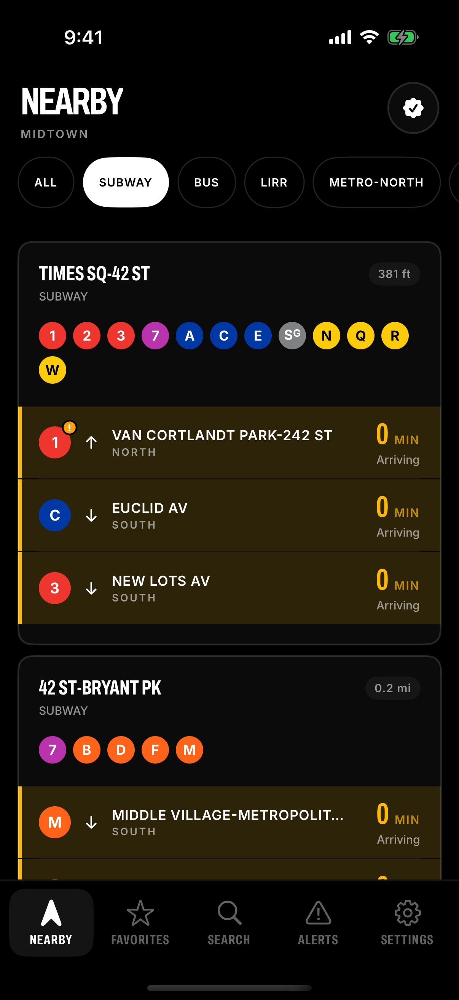
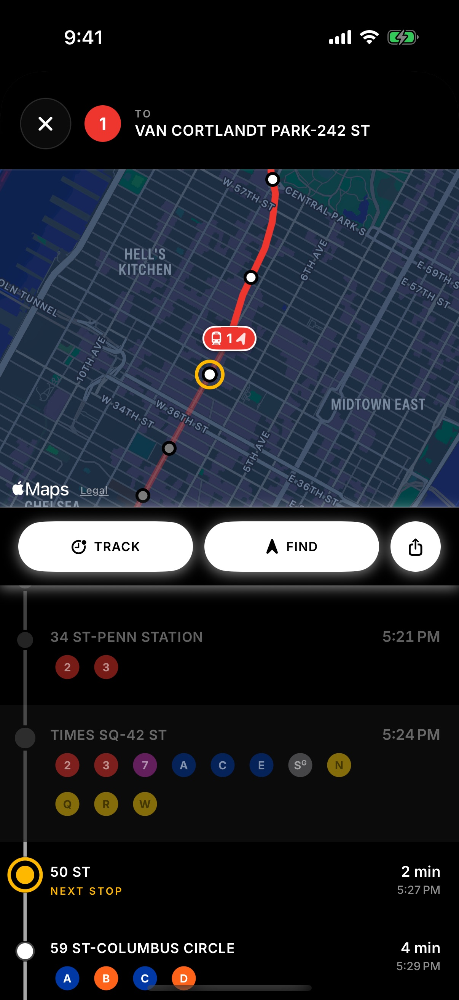
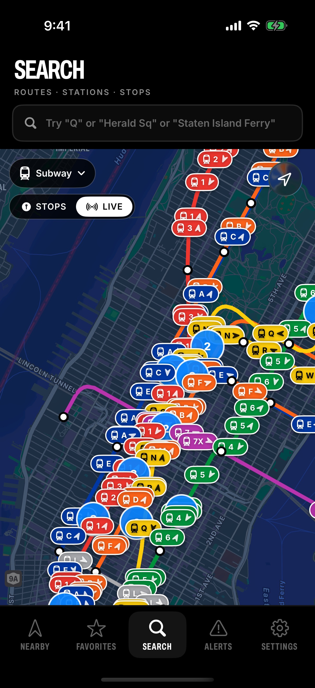
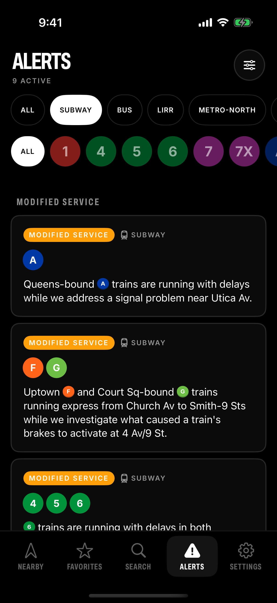
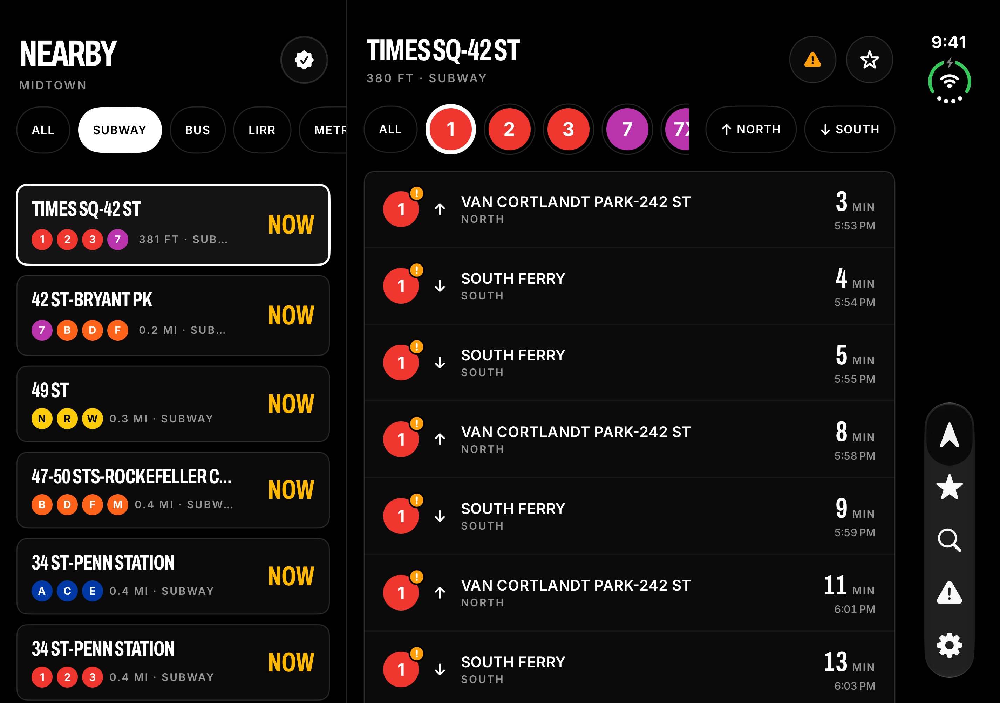
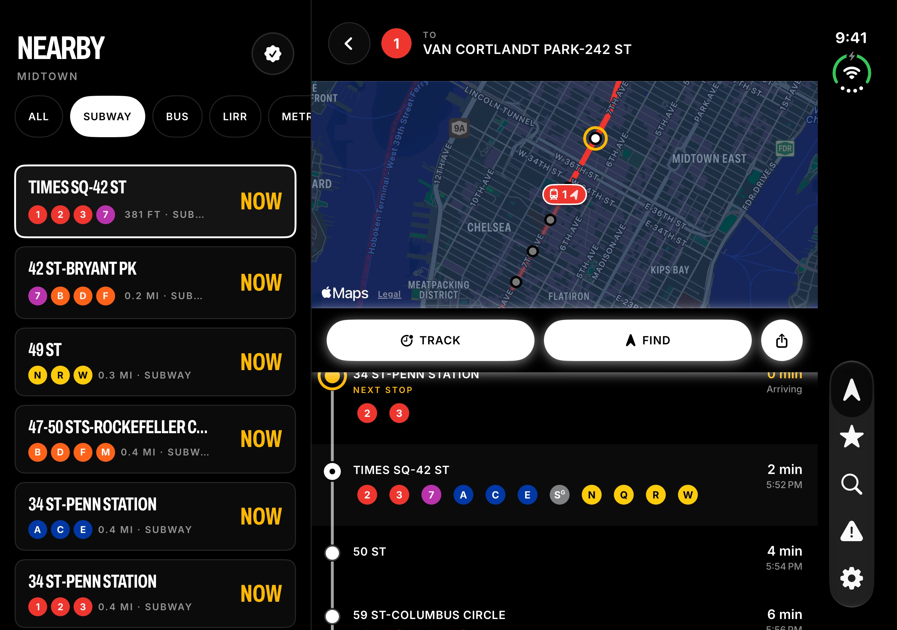
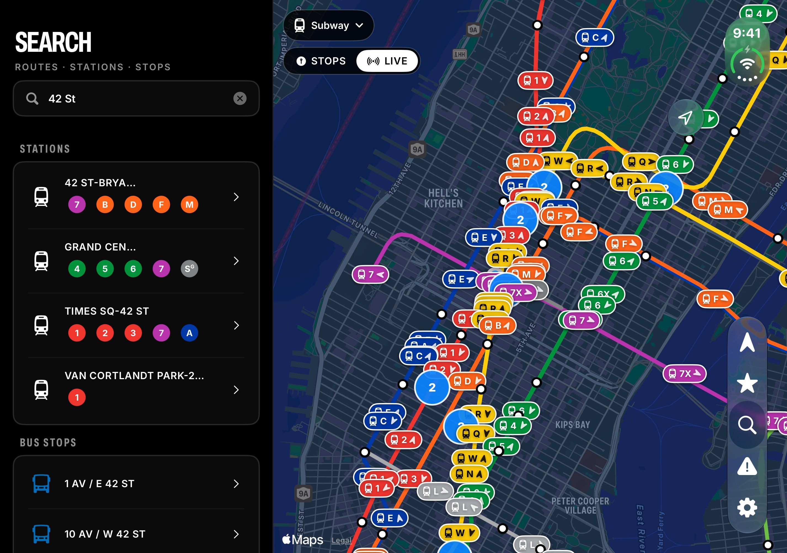
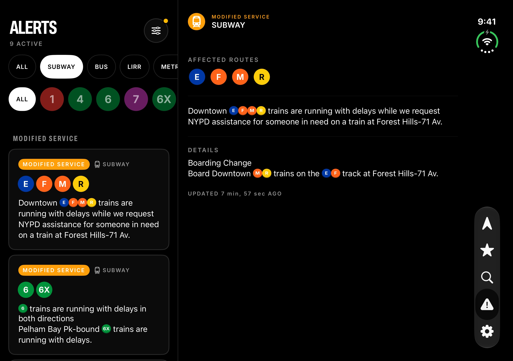
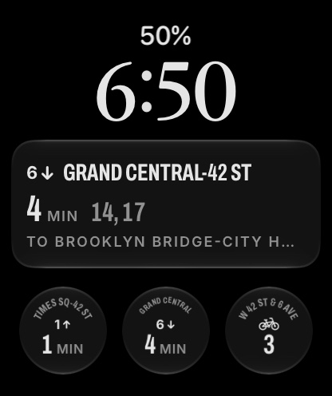
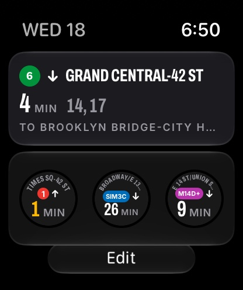
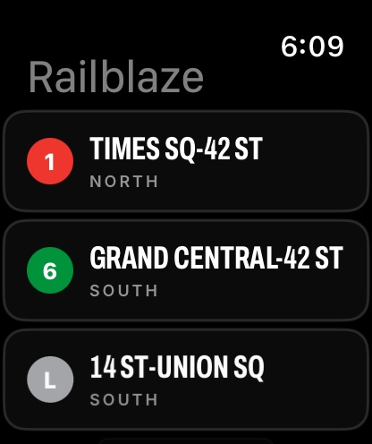
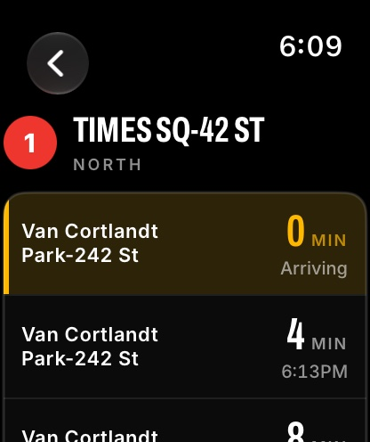
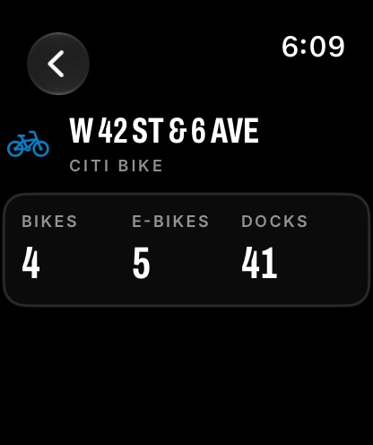
On your iPhone, on your wrist and on your Home Screen.
The whole app, built for one-handed glances on the go.
Open it up for your list and live details side by side. Closed, it's the full app on the front screen.
Your favorites on your wrist, live minutes on your watch face and in the Smart Stack, and the train you're tracking right there too.
Favorite arrivals and your Stamps progress on your Home Screen.